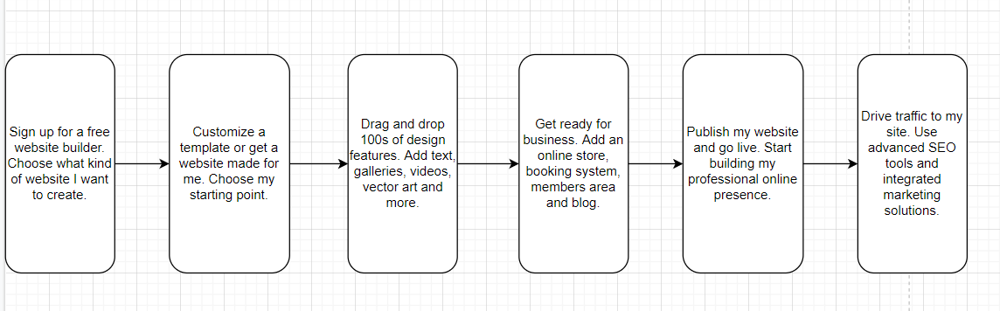
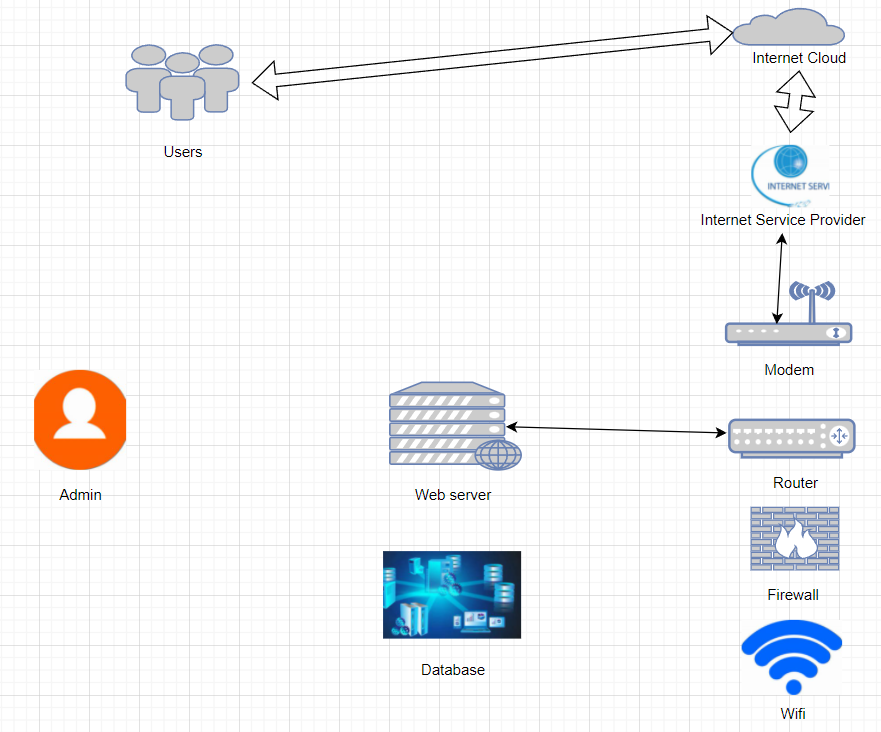
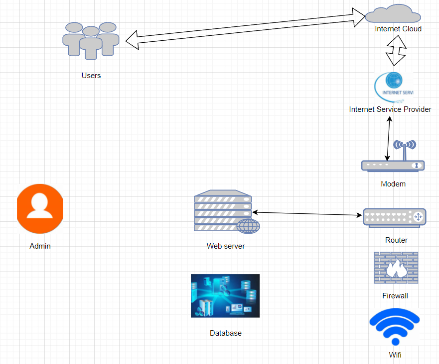

Article By: Mike
About Project
The process of design the website

System diagram

System diagram

| Server | |
| Hard disk | Western Digital UltrastarDC HC320 8TB |
| Router | TP-LINK TL-R473G |
| Database | Microsoft SQL server |
| Web editor | Dreamweaver |
| Web editor | Notepad++ |
| Logo Designer | Canva |
Project Name: Create a personal website
Hardware: Server, Hard disk, Router, Database
Software: Dreamweaver, Notepad++, Canva
In the process of creating this website, I can learn more basic knowledge related to the website, and by creating the website, I can also have a platform to show myself on the Internet, so that the public can know me more intuitively.
Methodology
I will use the Dreamweaver to design the website. Also, using Notepad and Canva to help me code better and make beautiful logo. And I will also use the server to connect the network and store information, use the database to store and share data, etc. Using hard disk to store data on electronic devices, use Router to provide wireless access to individual computers and other devices.
| Question | Answer |
|---|---|
| Name this system? | Mike's personal website |
| What are the system objectives? | Allow visitors more quickly understand the required system components and the interaction between each component. |
| List 3 essential system features and components? | 1.The system has a firewall, so it has a high security. 2.The system has a database, so it has a strong ability to store information. 3.The system has Internet Service Providers that can provide users with necessary services. Components: Internet Service Provider, Firewall, Router. |
| List 3 essential hardware from this system. | 1.Router(TP-LINK TL-R473G) 2.Hard Disk(Western digital UltrastarDC HC320 8TB) 3. Modem(TP-LINK TD-8620T ADSL2+ white Broadband Cat Modem Electric Tone) |
| List 3 essential software from this system. | 1.Web server 2.Database 3.Firewall |
| List 2 external system components. | 1.External user 2.Internet |
| List 2 system benefits | 1. The picture is the right size and the content is intuitive.
2. Components are placed in a suitable location, and visitors can easily distinguish between internal and external components. |
| List 2 project difficulties: | 1.Missing some details, e.g. about the wireless client. 2.Some components do not have a good understanding of its function and interaction with other components. |
| Question | Answer |
|---|---|
| Name this system? | Mike's system diagram |
| What are the system objectives? | To give visitors a clearer picture of the components his need for the site he make. |
| List 3 essential system features and components? | 1. The system has an Internet cloud that can store all kinds of information, including documents and emails. 2. The system has a modem that converts data from a digital format to a format suitable for analog transmission media such as telephone or radio. 3. The system has a firewall. Able to ensure safety. Components: Internet Cloud, Internet Service Provider, Firewall. |
| List 3 essential hardware from this system. | 1.Router(TP-LINK TL-R473G) 2.Hard Disk(Western digital UltrastarDC HC320 8TB) 3. Modem(TP-LINK TD-8620T ADSL2+ white Broadband Cat Modem Electric Tone) |
| List 3 essential software from this system. | 1.Web server 2.Database 3.Firewall |
| List 2 external system components. | 1.Internet 2.Admin |
| List 2 system benefits | 1. There are arrows pointing to facilitate the visitor to better understand the connection and interaction between components.
2. The picture is clear. Visitors can view it more easily. |
| List 2 project difficulties: | 1.The picture does not distinguish the internal and external components very well. 2.The website is not big and cannot be accessed by every people at once. |